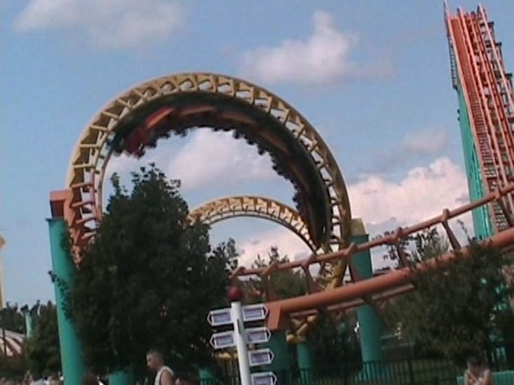
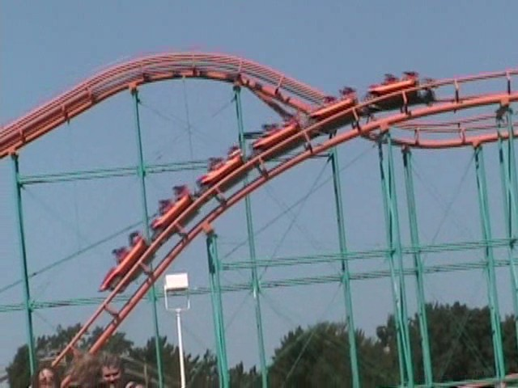

| |
Corkscrew Review

We're here at Michigan's Adventure. Today's ride we'll be reviewing for you is Corkscrew. Once you get in the cars and pull down the OTSRs, you're off. After a small dip and turn, we begin to climb up the lifthill. As you climb the lifthill, you get a lovely view of the lake and of the rest of Michigan's Adventure, which isn't that hard since the rides there arn't that big aside from Shivering Timbers. But before you can say anything else, you go into the turnaround and down the drop. The drop isn't too bad. Just a typical Arrow Drop. Then you dip up and go through another turn. Now, we probably just hit this on a bad day. But it felt a good SLAM here in this turn that actually hurt quite a bit. Then you roll through two corkscrews. They arn't fun and just pin you to the side. But luckily, before Corkscrew can hurt you anymore, you go through a big turn and into the brake run. Yeah, this ride is a peice of sh*t. It's rough and hurts like hell. But even if it was smooth, I would still find it to be a boring ride simply because you don't do much. Just drop, painful turn, corkscrews, brakes. Vekoma has a MUCH better standard corkscrew model. While I can respect the standard Arrow Corkscrew layout for being the coaster layout to have proper inversions (Not counting those death traps in the early 1900s that pulled 14 Gs). But yeah, by todays standards, it's just really boring. But really, at Michigan's Adventure, there's not much that stands out. So just ride it and get the credit.
4/10
Location: Michigan's Adventure
Opened: 1979
Built by: Arrow
Last Ridden: August 9, 2008
I have ridden this exact same ride at the following parks.
Canobie Lake Park
Nagashima Spaland
Silverwood
Toshimaen
Corkscrew Photos


Home
|